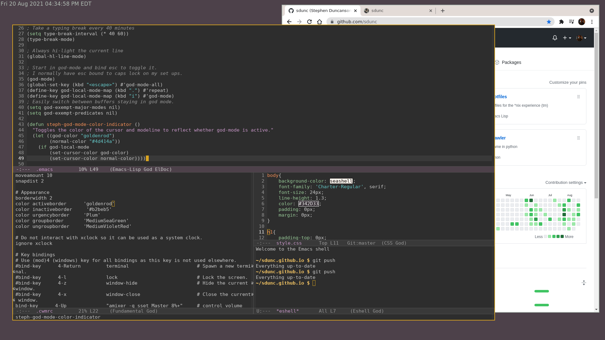

Stephen Duncanson
Welcome to my website!
I'm a Computer Engineering major at UConn.
Feel free to email me at .
I enjoy computing, reading or listening to books, cooking and baking, playing games, and running. You may enjoy my Spotify playlist for runs.
Computing
Debian GNU/Linux, cwm, xclock, Emacs, Google Chrome.
I try and use
free software whenever reasonable. I maintain
software notes on the programs I use, and release any
configuration files that I write.
Reading
I am currently reading
Programming Principles and Practice Using C++.
Check out my
reading log for more.